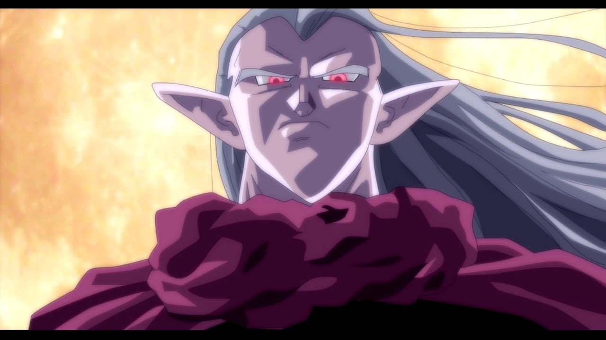

Magus (魔王 Maou?, lit. "demon king") is the tertiary antagonist and later, tritagonist of Chrono Trigger, and the dark mage waging war against the Kingdom of Guardia in 600 A.D. Magus was originally Janus (ジャキ Jaki?, "Jaki" in the Japanese version), the young prince of Zeal in Antiquity (12,000 BC). He is portrayed as brooding, potent, gloomy, and indomitably ambitious, especially in regards to finding his sister, Schala.
Magus is faced twice in the game as an Boss. The first time is as at the Fiendlord's Keep in 600 A.D. The second is an optional battle on the North Cape in 12000 BC.
Magus is the final boss in the Fiendlord's Keep. He's easily the strongest enemy faced at that point in the game. The battle with him happens in two phases.
In the first phase, Magus is protected by his powerful Barrier spell, which is a stronger form of the protection offered by the Barrier Sphere, and also has a very high physical defense. Each time he is hit, he will respond with Barrier Change, a spell that allows him to randomly shift each elemental weaknesses while absorbing the elements that are not weaknesses.
The second phase is marked by Magus dropping his barrier so that he can charge up for his ultimate attack. Crono and team will have a few rounds to hit him with all the power they have. He will no longer counterattack during this phase.